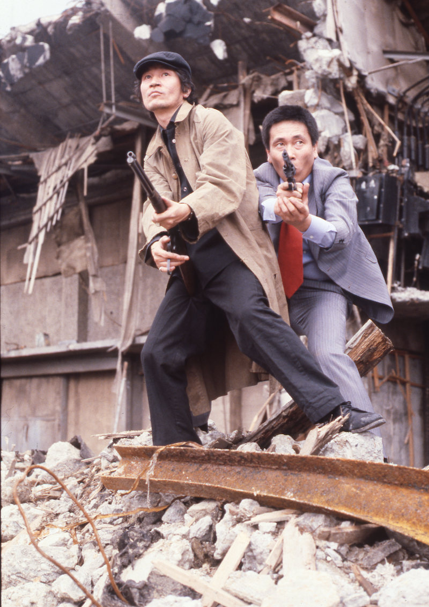
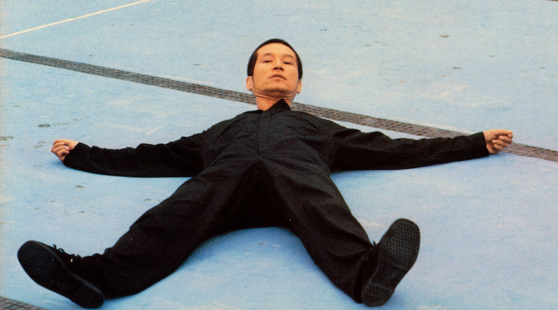
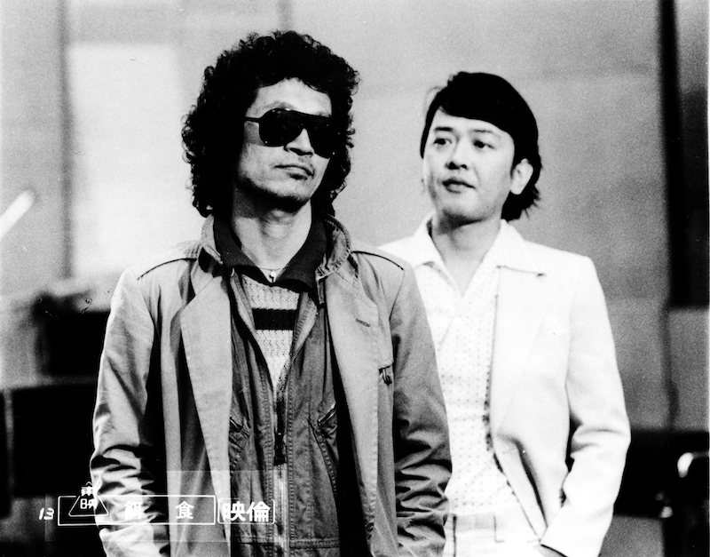
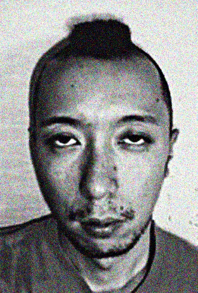

内田裕也特集 YUYA IS BACK.
スーパーGUNレディ ワニ分署

©1979「スーパーGUNレディ ワニ分署」日活
1979年/日本/96min
監督･脚本：曾根中生
脚本：荒井晴彦、高田純
原作：篠原とおる
出演：横山エミー、ジャンボかおる、佐藤慶、内田裕也、岸田森、安岡力也、古尾谷雅人
警察の秘密組織ワニ分署のメス刑事コンビの犯罪との闘いを描いた漫画原作映画。銀行強盗のシーンで登場する内田裕也、古尾谷雅人らの凶悪演技がこの作品の最大の見所。内田裕也が人質を前に演説を打つのだがそのシーンが真似したくなるほど最高過ぎるので必見！！
水のないプール

©1982「水のないプール」若松プロダクション
1982年/日本/103min/ビスタ
監督：若松孝二
脚本：内田栄一
音楽：大野克夫
出演：内田裕也、中村れい子、MIE、沢田研二、タモリ、赤塚不二夫
しがない地下鉄改札係の男はある日、クロロホルムで女を眠らせ犯すことを思いつく。仙台で起きた事件をヒントに豪華キャストで描いた。 犯罪を終えた後の朝のシーンが清々しい。「町の見張りをしている……これは政治なんだ！」
コミック雑誌なんかいらない！
©1986「コミック雑誌なんかいらない!」製作委員会
1986年/日本/124min
監督：滝田洋二郎
脚本：内田裕也、高木功
出演：内田裕也、ビートたけし、三浦和義、郷ひろみ、おニャン子クラブ
TVレポーター、キナメリが当時の芸能スキャンダル、ロス疑惑、日航機墜落、豊田商事会長刺殺事件など重大事件を突撃取材。キネマ旬報主演男優賞はじめ、映画賞を独占。カンヌ映画祭でも絶賛を受け、世界各地で上映された。「I Can't Speak Fucking Japanese!」
餌食

©1979「餌食」東映
1979年/日本/80min
監督：若松孝二
音楽：Matumbi、Peter Tosh
出演：内田裕也、多々良純、栗田洋子
これは演技なんかじゃなくて、Rock'n Roller内田裕也の、スクリーン上での記念すべきファースト・ソロアルバムだ。『ハーダー・ゼイ・カム』meets『彼女について私が知っている二、三の事柄』級の衝撃を、不幸にも世界中がまだ知らない。英国産レゲエ、マトゥンビのベースラインに揺さぶられながら、字幕なしで『餌食』を観られる喜びを噛みしめていただきたい。SMOKE "EJIKI", real LOVE & real PEACE.（文責モブ・ノリオ）
【トークイベント】内田裕也×モブノリオ トーク+YUYA WORKS

内田裕也
永遠のロッカー。1959年、日劇ウエスタンカーニバルでデビュー。その後、タイガース、フラワーズ、フラワートラベリングバンド、クリエイション等数々のバンドをプロデュースし、輩出。主宰の43年目を迎えたNEWYEARS WORLD ROCK FESTIVALは東京からアメリカ、イギリス、中華圏、韓国、ロシアに拡大。2012年からは東北でも開催している。自ら企画、脚本、主演した『コミック雑誌なんかいらない！』は国内外で高い評価を受ける。カンヌ国際映画祭で絶賛され、ニューヨーク近代美術館でも上映。キネマ旬報主演男優賞、ブルーリボン特別賞はじめこの年の映画賞を独占。2013年にはHKT48の指原莉乃とコラボ、「シェキナベイベー」をリリース。69（ロック）＋7歳の今も一層パワフルに音楽、映画、書籍等を企画中。
モブ･ノリオ
1970年奈良県桜井市生まれ。「介護入門」（芥川賞受賞）、「JOHNNY TOO BAD 内田裕也」（ロックンローラー内田裕也の評伝的要素を語りに落とし込んだモブによるDJ小説と、内田裕也が「平凡パンチ」誌上で連載した過激対談との気違いじみたスプリット合本）の著者。『餌食』を観ていなければ、映画の中の内田裕也のような犯罪者になっていたかもしれません。
9/17(土) 14:50〜
詳しくはスケジュールをご覧ください
YUYA WORKS
©YUYA UCHIDA OFFICE
2016年/日本/70min
内田裕也が世界を「泳ぎ」「走り」「自転車」で駆けた30年の映像の軌跡「YUYAトライアスロン」。トークイベントに併せて今回だけのプレミアム上映。